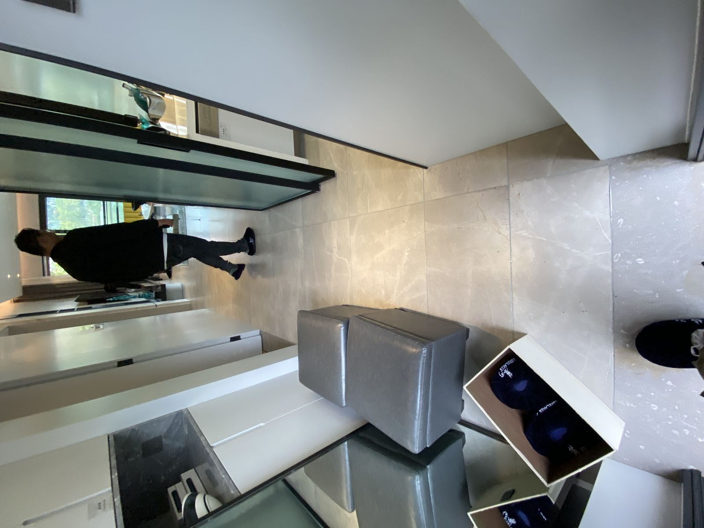
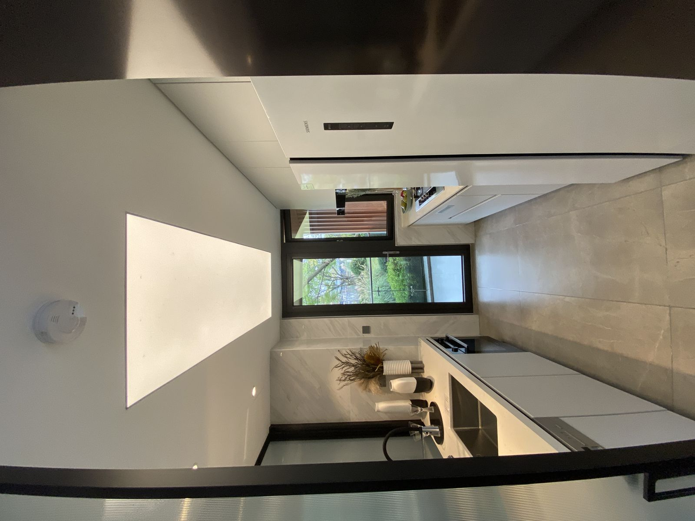
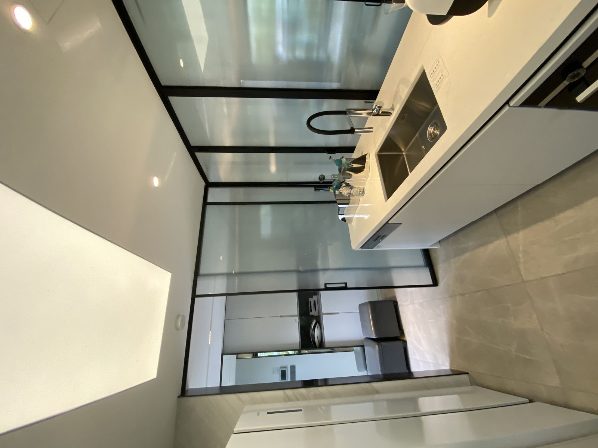
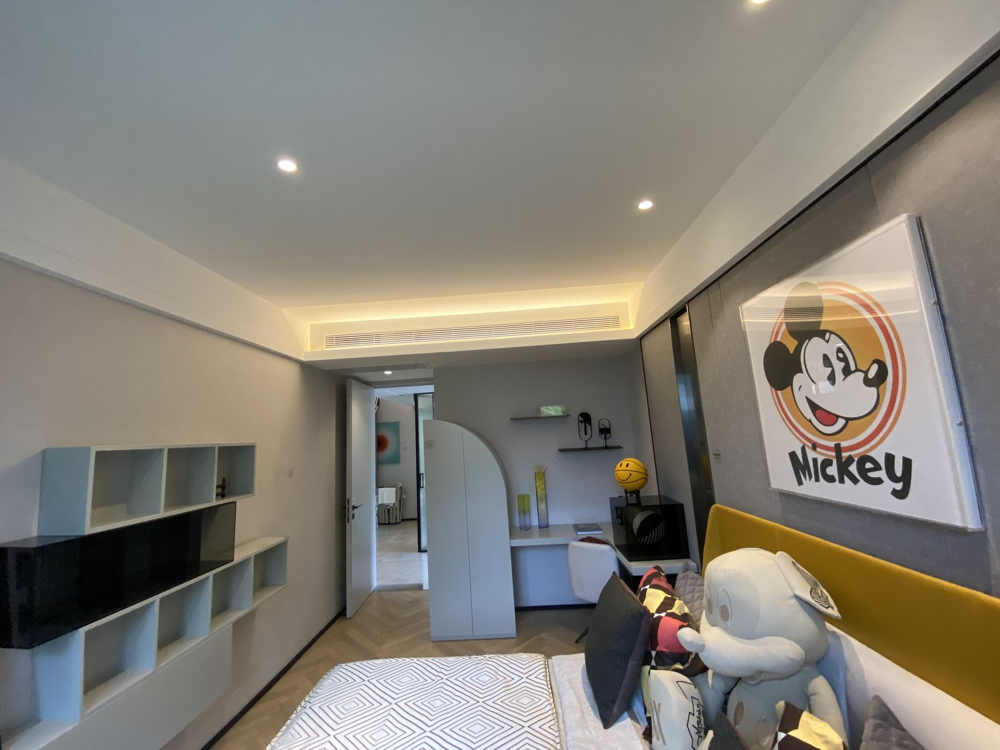
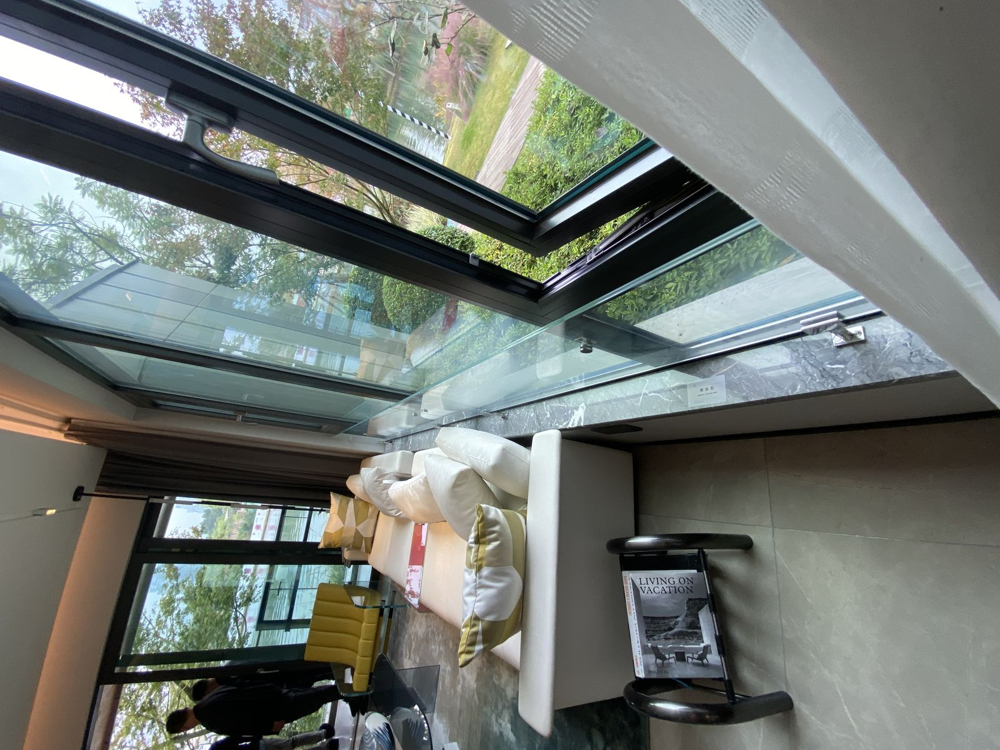
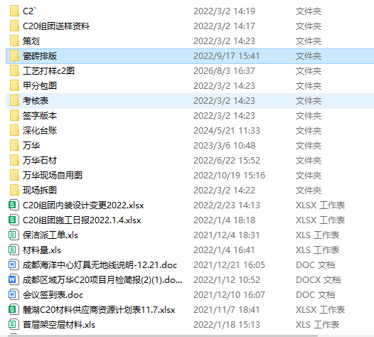

高端住宅精装设计 — 成都麓湖生态城
成都麓湖生态城 C20 组团精装设计及公区设计。项目包含别墅精装、公区大堂、架空层等空间，涉及石材排版、材料下单、节点优化等全流程工作。2021-2022 年跟进。
室内精装设计，含各功能空间平面布局、立面造型、节点大样。
大堂、架空层等公共区域精装设计，石材、木饰面选型与排版。
石材量核算、瓷砖排版、材料供应商资源计划、送样资料整理。
内装设计变更台账管理、施工工艺打样、现场施工跟进。






别墅及公区平面/立面/节点
架空层、大堂精装方案
石材量、瓷砖排版、送样
内装变更管理、工艺打样